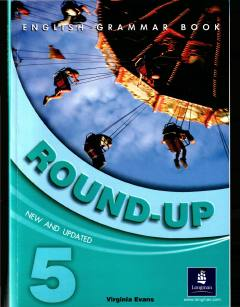

R5O'rta darajadagi o'quvchilar uchun ingliz tili grammatikasini o'rganish va mustahkamlash qo'llanmasi.
Round-Up 5 Virginia Evans qalamiga mansub bo'lib, o'rta darajadagi o'quvchilar uchun ingliz tili grammatikasini o'rganish va mustahkamlashga mo'ljallangan. Kitob rang-barang illyustratsiyalar, qiziqarli mashqlar hamda har to'rt birlikdan so'ng takrorlash testlarini o'z ichiga oladi. Shuningdek, qo'llanma imtihonlarga tayyorgarlik ko'rish uchun maxsus sinov testlarini ham taqdim etadi.